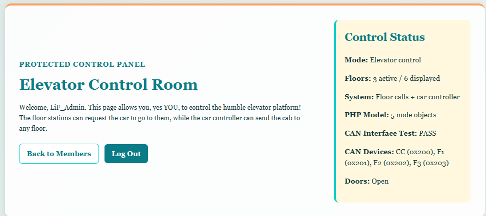
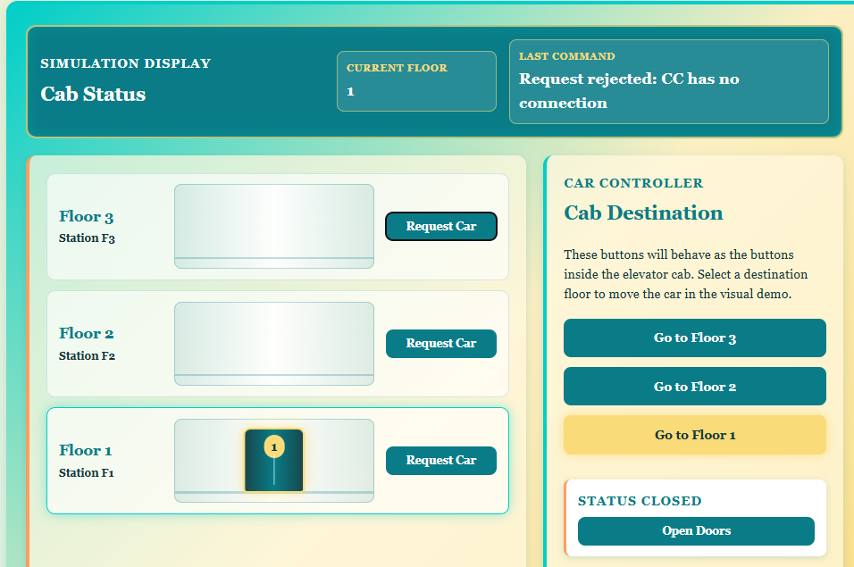

PHP OOP:
The main goal was to apply the object-oriented programming topics from Assignment 2 to the real elevator project. Instead of leaving the elevator car, floor stations, and sensor as unrelated variables, I created PHP classes that represent the physical parts of the system.
The final relationship was:
Node (abstract parent)
├── ElevatorCar
├── FloorNode
└── DistanceSensor
CANDevice (interface)
├── ElevatorCar
└── FloorNode
CANIdentifierTrait
├── ElevatorCar
└── FloorNode
Abstract Node parent class
I created Node.php as the parent for all of the hardware
objects. It is abstract because the project should create a specific
elevator car, floor node, or sensor rather than a generic node with no
purpose.
The shared properties are private:
private static $nodeCount = 0;
private $nodeName;
private $online;
This demonstrates encapsulation. Code outside the class cannot
directly overwrite the properties and must instead use methods such as
getNodeName(), isOnline(), and
setOnline().
$nodeCount is static, so it belongs to the class rather
than one object. Every time a child calls the parent constructor, the
counter increases:
self::$nodeCount++;The total can then be read without a particular object:
Node::getNodeCount();The parent also declares:
abstract public function getNodeType(): string;This forces every child class to identify its own node type.
Elevator, floor, and sensor classes
ElevatorCar stores the current floor and door state. Its
main methods are:
-
confirmCurrentFloor()to store an EC-confirmed floor. -
openDoors()andcloseDoors()to change the object state. areDoorsOpen()to return the current door state.-
canMove()to permit movement only when the node is online and the doors are closed.
The floor is validated before it is accepted. A value outside Floors 1
to 3 throws a NodeInputException rather than allowing an
invalid state into the object.
FloorNode stores its floor number and whether it
currently has an active request. Its methods include
requestElevator(), clearRequest(), and
hasActiveRequest().
DistanceSensor stores a distance measurement in
millimetres. setDistanceMm() rejects negative values
because a negative physical distance would not be valid for this
sensor.
Interface and trait
The elevator car and floor nodes communicate on CAN, so both implement
the CANDevice interface:
interface CANDevice {
public function getCANID(): string;
}
The interface is a promise that every CAN device has a
getCANID() method. This lets the control page loop over
several different object types while treating all of them as CAN
devices.
The actual CAN ID property and getter are shared through
CANIdentifierTrait:
trait CANIdentifierTrait {
private $canID;
public function getCANID(): string {
return $this->canID;
}
}Using the trait avoids copying the same property and getter into both classes.
Object instantiation and test
The PHP control page creates objects that match the project network:
$elevatorCar = new ElevatorCar("EC", "0x101", 1);
$floorNodes = [
1 => new FloorNode("F1", "0x201", 1),
2 => new FloorNode("F2", "0x202", 2),
3 => new FloorNode("F3", "0x203", 3)
];
$distanceSensor = new DistanceSensor("DS");The floor-node array makes it possible to select an object by requested floor:
$selectedFloorNode = $floorNodes[$requestedFloor];
$selectedFloorNode->requestElevator();The selected object's validated floor number is then used by the existing prepared SQL statement:
'requested_floor' => $selectedFloorNode->getFloorNumber()Door and movement handling now use the elevator object instead of loose Boolean checks:
$doorsOpen = $elevatorCar->areDoorsOpen();
$movementAllowed = $elevatorCar->canMove();Exception handling
I added NodeInputException and
CommunicationException, both extending PHP's base
Exception class.
-
NodeInputExceptionrepresents invalid floors, invalid controller names, negative sensor distances, or other bad node input. -
CommunicationExceptionrepresents a node or database state that could not be reached. -
PDOExceptionremains responsible for failures reported directly by PDO/MariaDB.
The control page catches these separately so it can return a useful JSON error type to JavaScript.
Related SQL tables
For the database portion, I used the linked
elevator_requests and can_message_log tables
rather than creating unrelated test data.
elevator_requests is the parent table. Its
auto-incremented elevator_request_id uniquely identifies
a requested trip and stores the requested floor, source controller,
requesting user, status, and timestamps.
can_message_log is the child table. Each row has its own
auto-incremented log_id, and its optional
elevator_request_id points back to the request that
caused the CAN message:
CONSTRAINT fk_can_log_request
FOREIGN KEY (elevator_request_id)
REFERENCES elevator_requests (elevator_request_id)
ON DELETE SET NULL
ON UPDATE CASCADE
ON DELETE SET NULL keeps the CAN history even if the
related request is removed. Indexes on fields such as
can_id and logged_at make later diagnostics
queries faster.
Result
The object model is now connected to the real elevator request path instead of existing only as a demonstration. PHP still queues requests through the existing database, while the hardware and WebSocket paths remain responsible for confirming actual movement.

Breaking it:
I purposefully set the elevatorCar offline to test if messages can still be queued:
// methods throw CommunicationException if a node is offline
$elevatorCar->setOnline(false);
$elevatorCar->verifyConnection();
$selectedFloorNode->verifyConnection();Then, when clicking any floor/car request button, an exception gets thrown:

The same can be done for any floor node within the array.